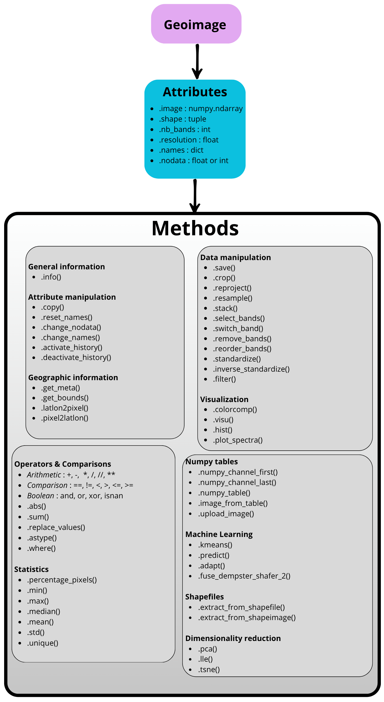

Rastereasy Library
Overview and structuration
The rastereasy library provides functions for the easy manipulation (resampling, cropping, reprojection, tiling, …)
and visualization (color composites, spectra) of geospatial raster and vector data (e.g., *.tif, *.jp2, *.shp). It simplifies geospatial workflows with efficiency.
A geospatial image is read and represented within the Geoimage class, which contains most of the
required functions for processing and visualization. Other classes are related to InferenceTools (some
functions related to clustering, domain adaptation, fusion) shpfiles or rasters (to deal with shapefiles
and rasters respectively)
The goal of rastereasy is to simplify geospatial workflows by offering tools for:
Reading and processing raster and vector files.
Resampling, cropping, reprojecting, stacking, … raster images.
Applying classic filters (gaussian, median, laplace, sobel) and generic ones.
Creating visualizations such as color composites or spectral analyses.
Perform dimensionality reduction along spectral bands (pca, lle, t-sne)
Use (train / apply) some classical Machine Learning algorithms.
Provide some tools for late fusion of classifications (Dempster-Shafer).
Provide some tools for some ML algorithms, basic domain adaptation, …
…
The Geoimage class
The Geoimage class contains most of the
required functions for processing and visualization. Other classes are related to InferenceTools (some
functions related to clustering, domain adaptation, fusion) shpfiles or rasters (to deal with shapefiles
and rasters respectively).
Apart from Geoimage class, rastereasy also provides functions to handle bounding boxes (e.g., extracting common areas between two images, or extending the spatial area of an image to match the extent of another) and to create stacks from individual band files (see in examples gallery).
Geoimage acts as a wrapper around a NumPy array, enriched with essential geospatial metadata like its Coordinate Reference System (CRS), spatial resolution, nodata information and geotransform. It provides a wide range of intuitive methods for data processing, analysis, and visualization.
The main attributes and methods of Geoimage class are illustrated below.
{kind=link}

A representative diagram of the Geoimage class,
highlighting its key attributes and methods.
Additional Notes
Refer to the examples in the examples gallery section for practical applications of the library.